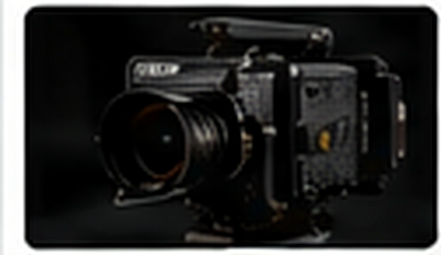
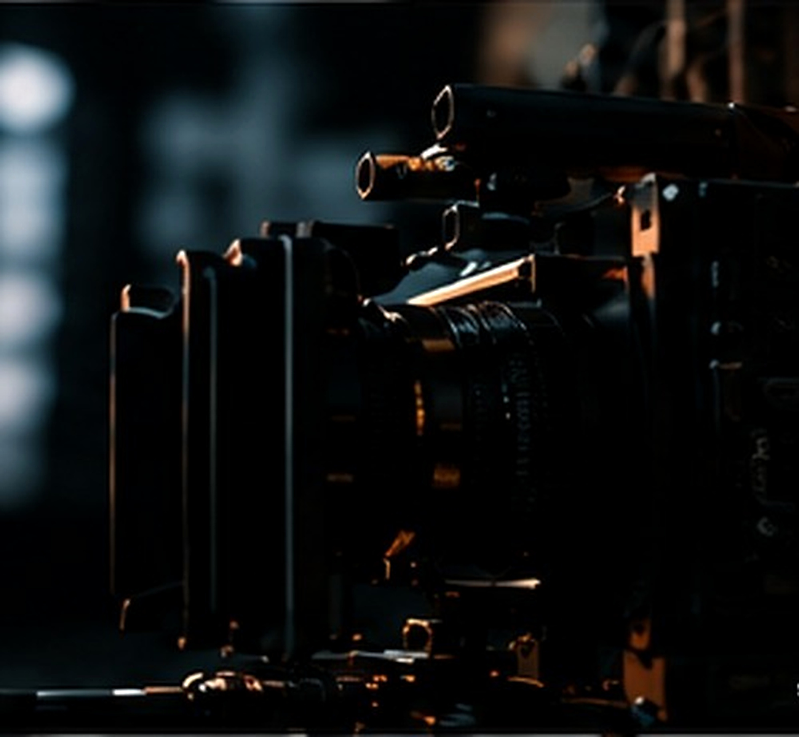
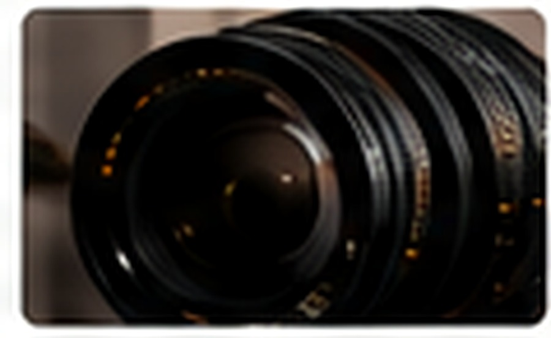
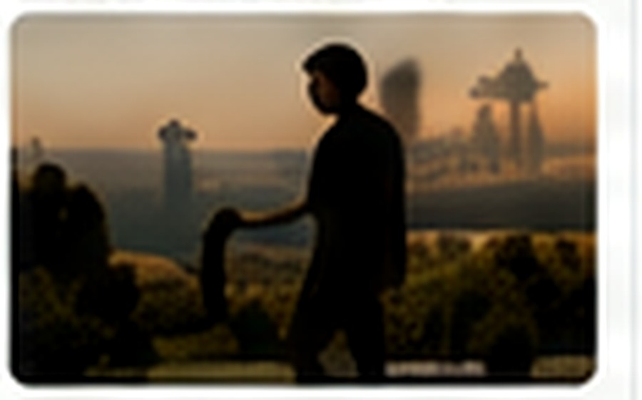
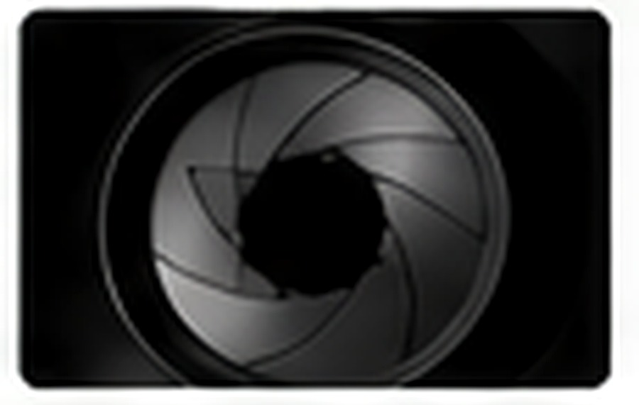
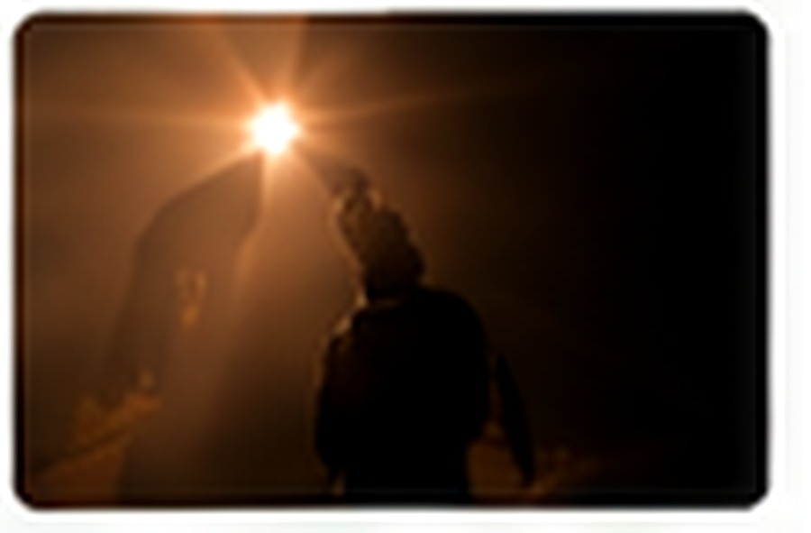
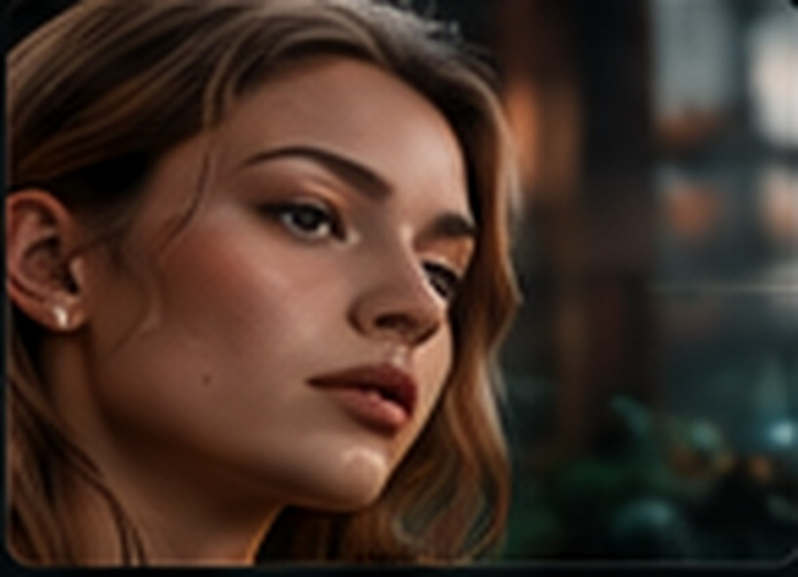
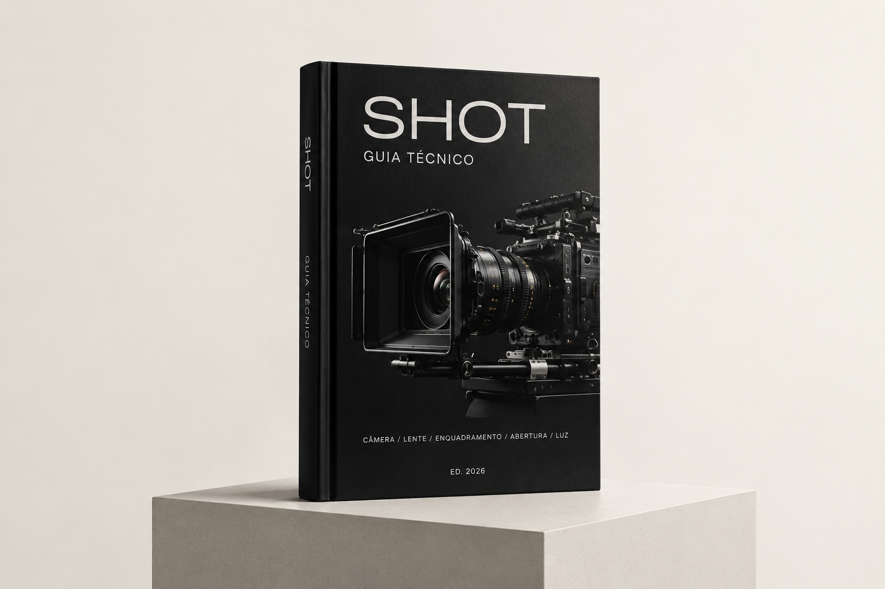

CÂMERA

O corpo define sensor, faixa dinâmica e textura de imagem.
12 MODELOS
GUIA TÉCNICO · ED. 2026
Um guia prático de referência técnica e engenharia de prompts para geração cinematográfica de imagem e vídeo por Inteligência Artificial.
SOBRE O GUIA
O SHOT organiza cinco parâmetros fundamentais da linguagem cinematográfica para estruturar prompts com mais precisão: câmera, lente, enquadramento, abertura e luz.
01 · SISTEMA
Cada decisão altera nitidez, profundidade, escala e atmosfera. O guia transforma essas escolhas em referências técnicas aplicáveis aos seus prompts.

O corpo define sensor, faixa dinâmica e textura de imagem.
12 MODELOS
O conjunto óptico determina flare, bokeh, distorção e caráter.
10 CONJUNTOS
A escala do personagem no ambiente define composição e narrativa.
08 ENQUADRAMENTOS
O f-stop controla entrada de luz e profundidade de campo.
04 F-STOPS
O estilo de iluminação dita o tom emocional e a estética do plano.
10 ESTILOS02 · LENTE
O guia reúne conjuntos vintage, anamórficos e modernos premium, com características e aplicações para diferentes linguagens visuais.

03 · COMBINAÇÕES
O guia combina câmera, lente, enquadramento, abertura e luz em receitas completas para diferentes gêneros e situações de captação.
ARRI ALEXA 35 · Cooke Speed Panchro · Close-Up · f/1.4 · Luz Difusa
RED V-RAPTOR / RED KOMODO · Anamórfica · Wide / Ground-level · f/4 · Luz Dura
ARRI ALEXA 65 · ZEISS Supreme Prime Radiance · Wide Shot · f/16 · Golden Hour
ARRI ALEXA Mini LF · Panavision C Series · Ground-level · f/2.8 · Low Key
Canon C500 Mark II · Leica Thalia · Medium Shot · f/16 · High Key
Sony VENICE · ARRI Signature Primes · Over-the-Shoulder · f/2.8 · Luz Natural
ARRI ALEXA 35 · Helios 44-2 58mm · POV · f/1.4 · Contraluz
ARRICAM ST · Cooke Speed Panchro · Wide Shot · f/4 · Chiaroscuro
04 · CATÁLOGO DE PROMPTS
O catálogo traz sintaxes técnicas em inglês para câmera, lentes, enquadramento, abertura e estilos de luz, com versões para still e vídeo.
05 · MÉTODO
06 · ACESSO
É simples, rápido e seguro. Todo o processo de pagamento e envio do seu guia é feito pelo WhatsApp.
VER COMO FUNCIONA →
Clique no botão e entre no grupo exclusivo.
No grupo, você recebe os dados para realizar o pagamento.
Faça o pagamento de R$ 28,90 de forma segura e prática.
Após a confirmação, enviamos o guia no WhatsApp privado.
SHOT · GUIA TÉCNICO · ED. 2026